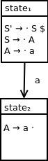

Handling end of string
After reducing A to S, from state1, we want to process the end of string according to our standard approach.
Extending our DFA, we end up with a final diagram of:
![DFA containing five states. State 1 contains the following productions: S prime produces dot S $, S produces dot A, A produces dot a. State 2 contains the following production: A produces a dot. State 1 transitions to state 2 on terminal symbol a. State 3 contains the following production: S produces A dot. State 1 transitions to state 3 on nonterminal symbol A. State 4 contains the following production: S prime produces S dot $. State 1 transitions to state 4 on nonterminal symbol S. State 5 contains the following production: S prime produces S $ dot. State 4 transitions to state 5 on end of string symbol $. State 5 is an accepting state.](assets/productionchaindfa5parsestates.png)
We've seen the process for constructing an LR(0) DFA for a grammar that derives a fixed string through a single production.
In this section, we will expand this process to handle a grammar that contains a production chain.
The language we will be analyzing is specified by the following grammar:
S → A
A → a
This grammar has the following augmented grammar:
S' → S $
S → A
A → a
This grammar has the following LR(0) parse table:
| a | $ | S | A | S' | |
| state1 | shift2 | goto4 | goto3 | ||
| state2 | reduce3 | reduce3 | |||
| state3 | reduce2 | reduce2 | |||
| state4 | accept |
Parsing input string a:
| Input queue | Parse stack | Action |
|---|---|---|
| a | 1 | Apply action of shift2 which corresponds to state1 and a in our parse table |
| 1 a 2 | Apply action of reduce3 which corresponds to state2 and $ in our parse table | |
| 1 A | Apply action of goto3 which corresponds to state1 and A in our parse table | |
| 1 A 3 | Apply action of reduce2 which corresponds to state3 and $ in our parse table | |
| 1 S | Apply action of goto4 which corresponds to state1 and S in our parse table | |
| 1 S 4 | Accept, since this action corresponds to state4 and $ in our parse table |
As before, we will construct our initial parse state using a closure starting with our initial qualified production rule.
Our initial set of qualified productions is:
{S' → · S $}
Calculating the closure set, we end up with:
{S' → · S $, S → · A, A → · a}
We can't move any farther in our closure calculation since we've hit a dead end with the terminal a. Advancing would require the processing of the input symbol a.
We can visualize our initial parse state as:
Observe the following sequence of parse stack states encountered in the parsing example above:
Before applying our reduction corresponding to the rule A → a, we must first shift terminal a onto the stack and move into state2.
To do so, we take the following qualified production:
A → · a
We shift the dot past the terminal a that we are processing and create the following qualified production set from this action:
{A → a ·}
Since the dot is at the end of the production, this closure can't be further expanded. We end up with state2 being defined as follows:
Finally, we connect state1 and state2 with the appropriate transition as follows:
Observe the following sequence of parse stack states encountered in the parsing example above:
Before applying our reduction corresponding to the rule S → A, we must first recognize that we have nonterminal A on the top of the parse stack. Once we know this, we use a goto action to enter state3 where this reduction can be applied.
In handling nonterminal A, we start with the following qualified production from our start state:
S → · A
and shift the dot past A, creating the following closure to start state3:
{S → A ·}
Since the dot is at the end of the production, this closure can't be further expanded. We end up with state3 being defined as follows:
Since we use a goto action to transition from state1 to state3 when preparing to handle nonterminal A, we extend our DFA with a subsequent transition to state3:
After reducing A to S, from state1, we want to process the end of string according to our standard approach.
Extending our DFA, we end up with a final diagram of:
We've seen the LR(0) DFA construction process for a grammar that derives a terminal symbol through a production chain.
Next, we will investigate a similar process related to the derivation of the empty string through a production chain.
GitHub Repository: https://github.com/bprollinson/ripal
Copyright © 2017 Brendan Rollinson-Lorimer